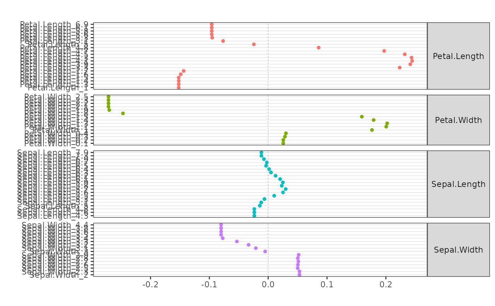

ggForestEffects.RdPlots the effects (partial dependence or accumulated local effects) of the covariates of a supervised learning model in a single a dot plot.
ggForestEffects(dt, vline=0, xlabel="", ylabel="", main="")data frame. Must have three columns : one with the names of the covariates (named "var"), one with the names of the categories of the covariates (named "cat"), one with the values of the effects (named "value"). Typically the result of GetAleData or GetPartialData functions.
numeric. Coordinate on the x axis where a vertical line is added.
character. Title of the x axis.
character. Title of the y axis.
character. Title of the plot.
There should be no duplicated categories. If it is the case, duplicated categories have to be renamed in dt prior to running ggForestEffects.
Apley, D. W., Zhu J. "Visualizing the Effects of Predictor Variables in Black Box Supervised Learning Models". arXiv:1612.08468v2, 2019.
Molnar, Christoph. "Interpretable machine learning. A Guide for Making Black Box Models Explainable", 2019. https://christophm.github.io/interpretable-ml-book/.
data(iris)
iris2 = iris
iris2$Species = factor(iris$Species == "versicolor")
iris.cf = party::cforest(Species ~ ., data = iris2, controls = cforest_unbiased(mtry=2))
ale <- GetAleData(iris.cf)
ale$cat <- paste(ale$var,ale$cat,sep='_') # to avoid duplicated categories
ggForestEffects(ale)
